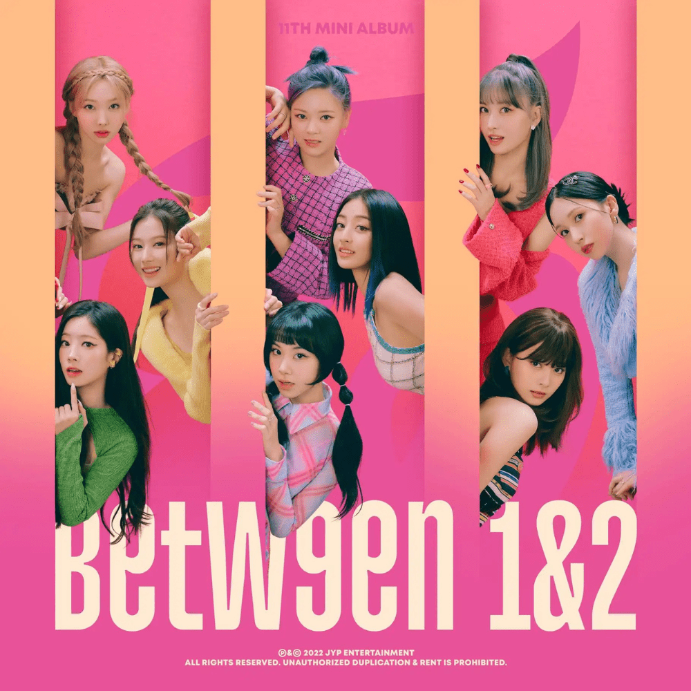

Conheça o álbum "Between 1&2" do grupo sul-coreano Twice
Imagem: JYP Entertainment
Lançado em agosto de 2022, "Between 1&2" é o 11º mini-álbum do grupo de K-pop TWICE, consolidando ainda mais sua posição no cenário global da música. Este álbum é uma celebração da jornada do grupo e um tributo aos seus fãs leais, conhecidos como ONCE.
"Between 1&2" contém sete faixas, cada uma cuidadosamente produzida para destacar a versatilidade e o talento das nove integrantes do grupo. A faixa-título, "Talk that Talk," é uma explosão de energia com um refrão cativante e uma coreografia vibrante, refletindo a essência dinâmica e alegre do TWICE.
As canções variam de sons pop enérgicos a baladas emocionantes, oferecendo uma experiência auditiva diversificada. As letras exploram temas de amor, crescimento pessoal e conexão, ressoando profundamente com a audiência.
Além da música, o álbum é um testemunho do compromisso do TWICE com a inovação e a excelência. A produção visual do álbum, incluindo os videoclipes e as apresentações ao vivo, eleva a experiência do ouvinte, tornando "Between 1&2" um verdadeiro espetáculo audiovisual.
Em resumo, "Between 1&2" não é apenas um álbum; é uma experiência completa que captura a essência do TWICE e reforça a conexão especial entre o grupo e seus fãs. É uma adição essencial para qualquer coleção de música pop moderna e um reflexo do impacto contínuo do TWICE na indústria musical global.
Sobre o grupo
TWICE é um grupo feminino de K-pop formado pela JYP Entertainment em 2015. Composto por nove talentosas integrantes: Nayeon, Jeongyeon, Momo, Sana, Jihyo, Mina, Dahyun, Chaeyoung e Tzuyu, o grupo rapidamente se destacou no cenário musical coreano e internacional. O nome "TWICE" simboliza o desejo do grupo de impressionar seus fãs duas vezes — uma através da audição e outra através da visão.
O sucesso meteórico do TWICE começou com seu single de estreia "Like OOH-AHH," que foi amplamente elogiado pela sua energia vibrante e coreografia cativante. Desde então, TWICE lançou uma série de hits que conquistaram o topo das paradas, incluindo "Cheer Up," "TT," "Likey," e "Fancy." Cada lançamento mostrou a capacidade do grupo de se reinventar e de explorar novos estilos musicais, solidificando sua posição como um dos grupos mais influentes do K-pop.
Além da música, o TWICE é conhecido por sua presença encantadora e interações carismáticas com os fãs, conhecidos como ONCE. A conexão entre o grupo e seus fãs é um dos pilares do seu sucesso contínuo. As integrantes frequentemente expressam sua gratidão e amor pelos ONCE, tornando-os parte integrante de sua jornada musical.
O grupo também é reconhecido por suas performances ao vivo eletrizantes, onde mostram não apenas suas habilidades vocais e de dança, mas também sua capacidade de criar momentos memoráveis no palco. Cada show do TWICE é uma experiência inesquecível, repleta de energia, emoção e a alegria contagiante das integrantes.
Com uma carreira marcada por prêmios, recordes e uma base de fãs leal e crescente, o TWICE continua a inovar e a encantar o mundo da música. A sua combinação única de talento, trabalho árduo e charme inegável assegura que o grupo continuará a ser uma força dominante na indústria musical global por muitos anos.